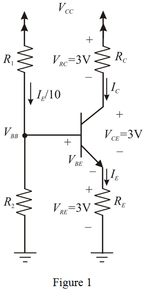
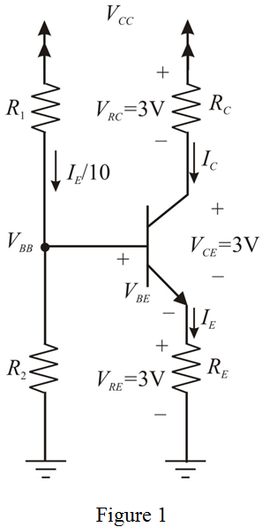

Refer to Figure 6.60 (a) in the textbook.
Consider that the supply voltages is 9 V and it is equally split between  , , and
, , and  .
.
The current through the collector resistor,  is, 0.6 mA.
is, 0.6 mA.
Draw the circuit and represent the voltages and currents.

Refer to Figure 6.60 (a) in the textbook.
Consider that the supply voltages is 9 V and it is equally split between , , and .
The current through the collector resistor, is, 0.6 mA.
Draw the circuit and represent the voltages and currents.

Apply Ohm’s law to the circuit to find the value of collector resistance,  .
.
Substitute 3 V for and 0.6 mA for  .
.
Therefore, the value of collector resistance,  is,
is,  .
.
Apply Ohm’s law to the circuit to find the value of emitter resistance,  .
.
Consider that the current gain,  is very large. (That is, ).
is very large. (That is, ).
The emitter resistance is,
Substitute 3 V for and 0.6mA for  .
.
Therefore, the value of emitter resistance,  is,
is,  .
.
Substitute 0.7 V for  , and 3 V for .
, and 3 V for .
Apply Ohm’s law to the circuit to find the value of unknown resistance,  .
.
Substitute 9 V for  , 3.7 V for
, 3.7 V for  , and 0.6 mA for
, and 0.6 mA for  .
.
Apply voltage division method to the circuit to find the value of unknown resistance,  .
.
Substitute 9 V for  , 3.7 V for
, 3.7 V for  , and for
, and for  .
.
Choose suitable 5% resistors for  .
.
Apply voltage division method to the designed circuit.
Substitute 9 V for  , for
, for  , and for
, and for  .
.
Therefore, the base voltage,  is, .
is, .
Apply Kirchhoff’s voltage law to the designed circuit.
Substitute 3.875 V for  , and 0.7 V for
, and 0.7 V for  .
.
Therefore, the emitter voltage,  is, .
is, .
Substitute 3.175 V for  , and
, and  for
for  .
.
Calculate the collector current.
Substitute 90 for  and 0.635 mA for
and 0.635 mA for  .
.
Therefore, the collector current,  is, .
is, .
Consider the following expression for the collector current in the circuit:
Simplify the expression to get an expression for the collector voltage.
Substitute 9 V for  , 0.628 mA for
, 0.628 mA for  , and
, and  for
for  .
.
Therefore, the collector voltage,  is,
is,  .
.